From Skeptic to Superpower: Real‑World AI Coding Workflows That Scale

Official description
AI coding tools promise massive productivity gains, but which ones actually work and why? In this session, we’ll walk through how two engineers use different tools daily: one using Claude Code + Cursor, the other GitHub Copilot CLI. We’ll cover what initially didn’t work, skepticism we had, where each tool shines, and where they fall down. We’ll show what this looks like for a team of 20 engineers that delivers at a scale of 200. No hype, just realistic workflows, tradeoffs, and lessons learned. Seating for this session is first-come, first-served. Add it to your schedule to plan your day and arrive early to secure a spot.
Summary
Overview
A Microsoft quantum computing research talk presenting the company's full-stack, topological approach to building a commercially viable quantum machine, anchored by the unveiling of the Majorana 2 quantum processing unit. The speaker argues that better materials, interfaces, and AI-assisted design — not raw qubit counts — are the path to scalable quantum computing.
(Note: the transcript content concerns quantum hardware and does not match the listed session metadata for BRK229, "From Skeptic to Superpower: Real-World AI Coding Workflows That Scale." The summary below reflects the transcript as provided.)
Key announcements
- Majorana 2 quantum processing unit [00:03:57
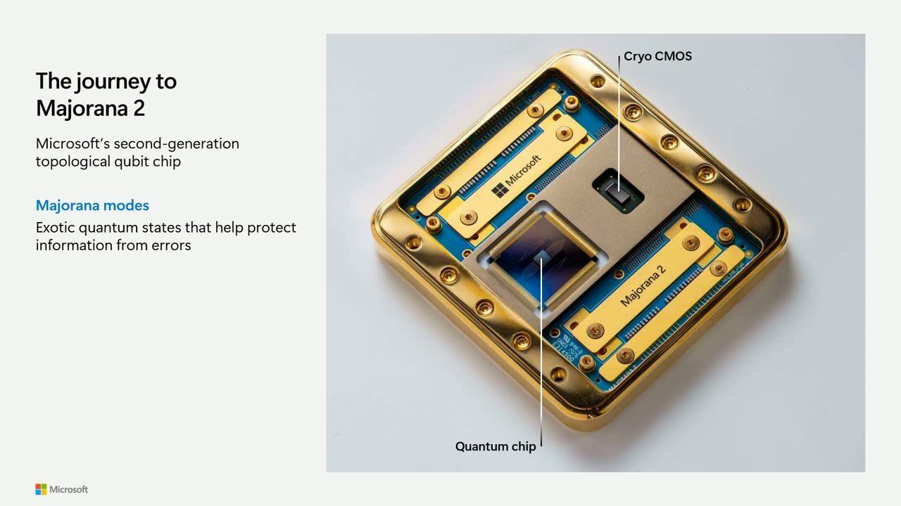
m05s m10s
m10s p05s
p05s p10s] — A new quantum chip powered by a topological core, pairing topological qubits with on-chip cryo-CMOS control at millikelvin temperatures to address input/output challenges.
p10s] — A new quantum chip powered by a topological core, pairing topological qubits with on-chip cryo-CMOS control at millikelvin temperatures to address input/output challenges. - New lead-based material stack [00:07:34
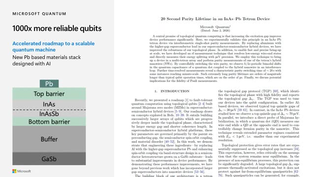
m05s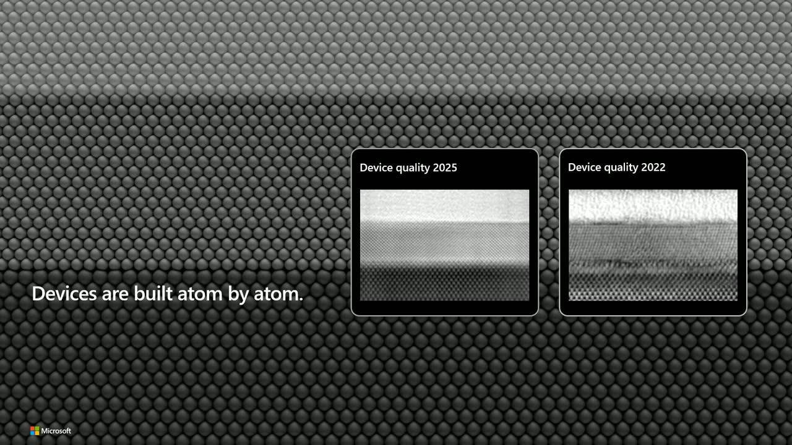
m10s p05s
p05s p10s] — The team replaced aluminum with a lead superconductor whose parent gap is roughly four times larger, requiring a redesigned substrate, quantum well, and interfaces across the entire semiconductor stack.
p10s] — The team replaced aluminum with a lead superconductor whose parent gap is roughly four times larger, requiring a redesigned substrate, quantum well, and interfaces across the entire semiconductor stack. - 1000x qubit performance improvement [00:08:02
 m05s
m05s m10s
m10s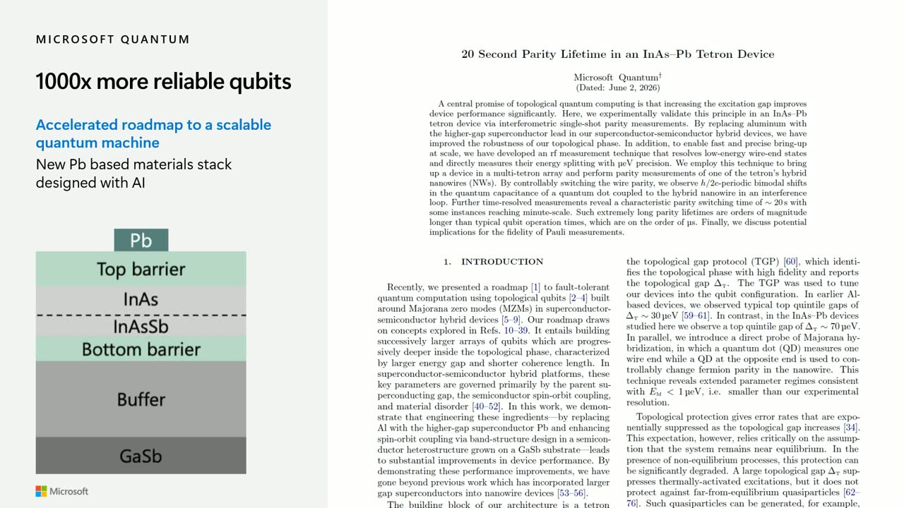
p05s p10s] — The larger parent gap translates directly into a thousand-fold improvement in qubit performance, as reported in an accompanying paper.
p10s] — The larger parent gap translates directly into a thousand-fold improvement in qubit performance, as reported in an accompanying paper. - Qubit lifetime extended to about a minute [00:11:55
 m05s
m05s m10s
m10s p05s
p05s p10s] — Up from a maximum of 10 milliseconds in the prior aluminum-based device, a roughly 1000x increase in coherence lifetime.
p10s] — Up from a maximum of 10 milliseconds in the prior aluminum-based device, a roughly 1000x increase in coherence lifetime. - Roadmap accelerated from 2033 to 2029 [00:13:10
 m05s
m05s m10s
m10s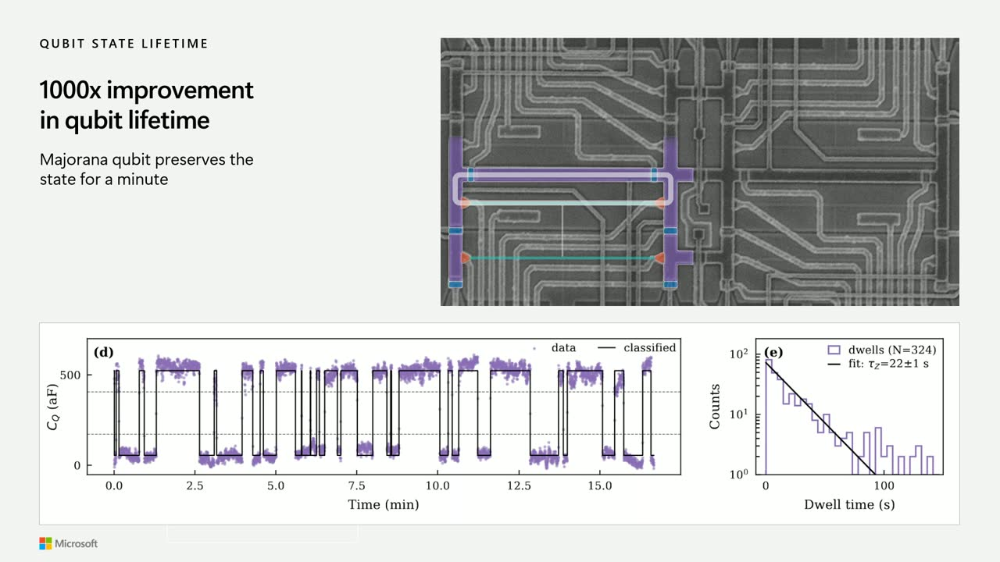
p05s p10s] — Confidence from rapid one-year iteration moved up the target date for a commercially viable quantum machine by four years.
p10s] — Confidence from rapid one-year iteration moved up the target date for a commercially viable quantum machine by four years. - AI-accelerated chip design [00:14:04
 m05s
m05s m10s
m10s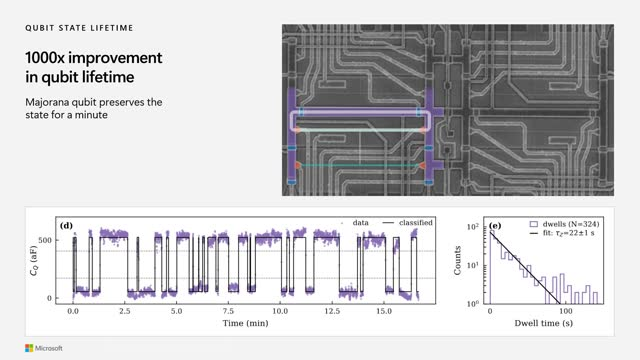
p05s p10s] — Working with a discovery team and AI-enabled tools, the group optimized over hundreds of parameters and designed the chip in less than a month.
p10s] — Working with a discovery team and AI-enabled tools, the group optimized over hundreds of parameters and designed the chip in less than a month.
Topics covered
- Unified strategy combining AI, quantum, and high-performance computing (CPU, GPU, and QPU working together in the cloud).
- Full-stack quantum machine philosophy spanning hardware, quantum error correction, classical compute, and applications.
- Requirements for qubits to be small (micron-scale), fast (microsecond operations), and reliable.
- Topological qubits and Majorana modes for inherent protection from errors and decoherence.
- Engineering a new phase of matter — the topological superconductor ("topoconductor") — from superconductor/semiconductor interfaces under magnetic field.
- Atom-by-atom device fabrication and improvements in semiconductor–superconductor interface quality.
- Qubit array architecture: 2x2 arrays with tuning, control, and readout gate layers, and fast RF capacitance readout in the Z basis.
- Density enabling a million-qubit chip on a credit-card-sized footprint.
Notable quotes
"It's not about individual qubits or the count of them, but it's about all layers in the stack."
"I've been with the program 15 years and the level of improvement which was enabled by AI and simulations that happened over the last year is equivalent to the level of progress that we've made in the first decade of my tenure within Microsoft."
"The lifetime of a qubit has increased up to a minute, which is enormous on the scale of qubits."
Products and tools mentioned
- Majorana 2 quantum processing unit
- Topological superconductor ("topoconductor")
- Cryo-CMOS control electronics
- Lead superconductor material stack
- Microsoft cloud offerings (CPU/GPU/QPU)
Speakers featured
- Speaker not identified by name within the transcript. (Session metadata lists Priyanka Sharma and Mario Toffia, but the transcript does not attribute the talk to either.)
Follow-up resources


{kind=link}
{kind=link}
{kind=link}
{kind=link}
{kind=link}
{kind=link}
{kind=link}
Frames
{kind=link}
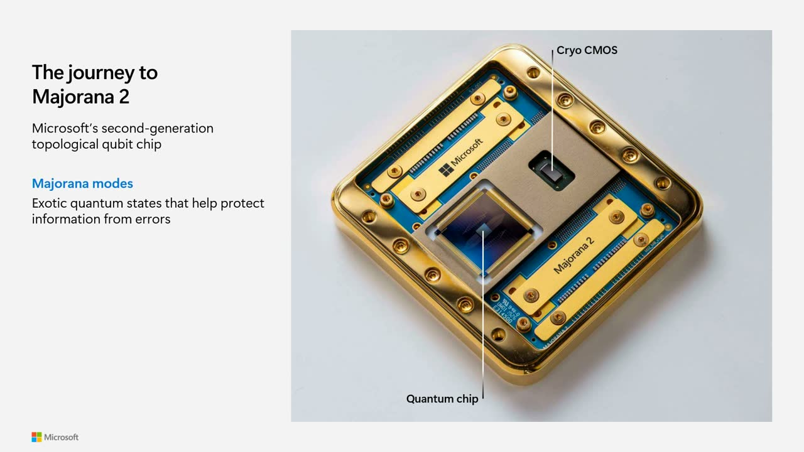
{kind=link}
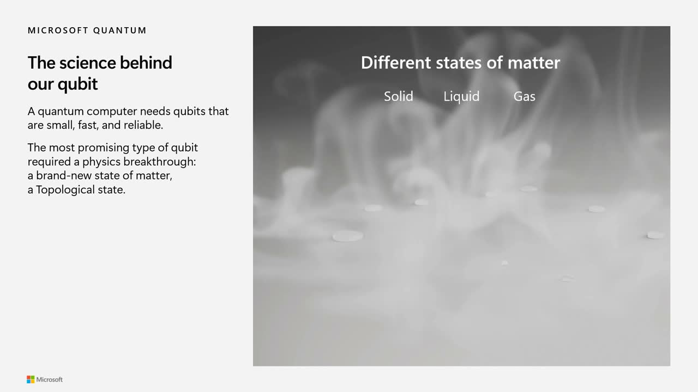
{kind=link}
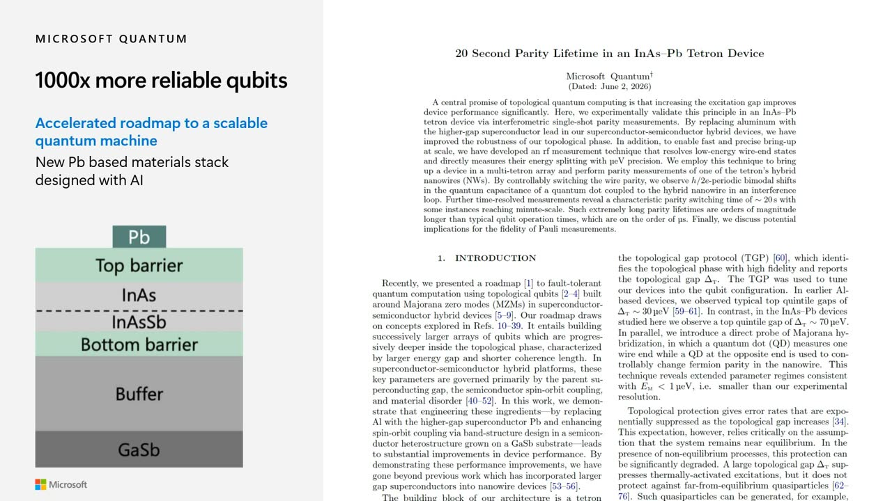
{kind=link}
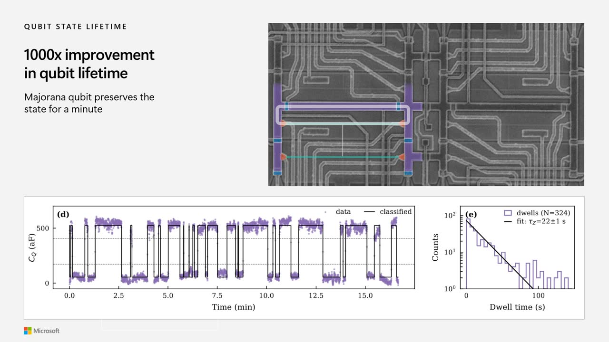
{kind=link}


{kind=link}
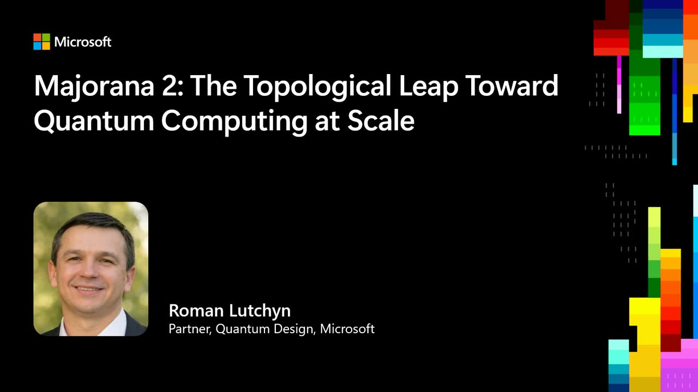


Transcript
Show / hide transcript (14,200 chars)
[00:00:00] OK, now, now we have it. [00:00:02] Thank you. [00:00:02] OK, So the reason why we are interested in quantum [00:00:07] is because quantum can potentially change entire industry. [00:00:12] It can disrupt healthcare industry because if we can enable [00:00:17] certain drug discoveries through quantum computation, we can shorten the [00:00:23] cycle for therapy development. [00:00:26] It can disrupt our energy and climate industries because certain [00:00:31] catalysts will enable faster carbon capture or nitrogen fixation fix [00:00:37] solve nitrogen fixation problem. [00:00:41] So in order for us to be able to to [00:00:44] take advantage of it here at Microsoft, we are thinking [00:00:49] about a unified approach which combines AI, quantum and high [00:00:54] performance computing. [00:00:57] So AI for design and optimization, quantum to enable faster [00:01:04] computation and enable to generate high quality data that will [00:01:11] be used by AI and HPC. [00:01:13] All app basically supports these hybrid workflows and makes the [00:01:20] whole approach useful. [00:01:22] So we are uniquely positioned to take advantage of quantum [00:01:26] by leveraging over 3 components that we are developing within [00:01:30] Microsoft. [00:01:32] So from the very beginning of this program, we were [00:01:36] thinking about full stack quantum machine. [00:01:39] It's not about individual qubits or the count of them, [00:01:43] but it's about all layers in the stack. [00:01:46] They involve building physical hardware quantum processing units, thinking about [00:01:52] quantum error correction and classical compute that is needed for [00:01:57] that, and ultimately thinking about the highest layer which involves [00:02:02] applications and making the machine useful for for consumer. [00:02:07] So at the end of the day, one should think [00:02:10] about the CPUGPU and QPU all working seamlessly together within [00:02:16] our cloud offerings and enable solving, you know, commercially valuable [00:02:22] problems for us. [00:02:24] So of course, for us to be able to do [00:02:27] that, we need to think strategically and need to think [00:02:30] about qubits bottom up. [00:02:34] And so from, you know, doing a lot of studies, [00:02:37] we realized that we need to build qubits that are [00:02:41] small, roughly Micron size, that are fast, They're doing operations [00:02:46] at the microsecond scale, and most importantly, that are reliable. [00:02:52] And that's where topological approach shines. [00:02:56] Because the idea of topological approach is that if you [00:03:00] encode information in these Majorana modes, these exotic quantum degrees [00:03:05] of freedom, this information will be inherently protected from or [00:03:10] immune from errors and decoherence, which is a difficult problem [00:03:15] for all the other platforms. [00:03:18] And so in order for us to be able to [00:03:20] solve this problem, we had to invent new material stack, [00:03:24] new phase of matter that supports these degrees of freedom. [00:03:29] And so we're happy to announce that we developed much [00:03:34] better material stack that gives us enormous improvement in cubic [00:03:40] lifetime. [00:03:42] And we also built a new quantum processing unit with [00:03:46] this material stack. [00:03:48] And this processing unit is shown here in the picture. [00:03:52] It just, and I wanted to showcase it to you [00:03:55] right here. [00:03:57] This is Majorana 2. [00:04:03] So you can see here to the left, a quantum [00:04:07] chip that is powered by the topological core. [00:04:13] Our cubits are digitally controlled, so we couple them with [00:04:17] the cryocemos on the same chip, which helps us to [00:04:21] solve input output problems. [00:04:24] And you know, the, the idea is that these qubits, [00:04:27] they operate at very low temperature, millikelvin temperatures. [00:04:31] And therefore, we want to make sure we, you know, [00:04:35] solve, solve this input output problem by placing the cryo [00:04:39] CMOS, which controls the operations at the same sort of [00:04:44] millikelvin stage as our topological qubits. [00:04:55] All right, so, so right, So what is the science [00:05:00] behind our qubit? [00:05:03] So as I said, we want qubits to be fast, [00:05:06] small and reliable. [00:05:09] There are very there. [00:05:10] It's very difficult to satisfy all these constraints. [00:05:14] And so as I said, we needed to invent a [00:05:17] new phase of matter, which is called topological superconductor or [00:05:22] in short, topoconductor. [00:05:24] So commonly we know phases of matter such as solid, [00:05:29] such as liquid, such as gas, but our phase of [00:05:33] matter is totally different. [00:05:36] It's, it appears when you combine materials such as superconductor, [00:05:42] just conventional superconductor and conventional super semiconductor. [00:05:48] Superconductor conducts electricity with 0 resistance. [00:05:52] Semiconductor has electrons and you can control density of these [00:05:56] electrons. [00:05:57] But when you combine them together in the right proportions [00:06:01] and use magnetic field, we generate a very unique state [00:06:05] that supports these Majorana modes, exotic modes that we encode [00:06:10] information in. [00:06:12] And so we had to engineer the right, you know, [00:06:16] interface between superconductor and semiconductor and make sure that this [00:06:23] layered material appears as as one sort of phase of [00:06:28] matter, as unified phase of matter. [00:06:33] For us to be able to support the stringent requirements, [00:06:38] we have to develop new recipes for fabrication quantum devices. [00:06:43] They live or die depending on the quality and depending [00:06:47] on the constraints, whether we can satisfy these constraints or [00:06:51] not. [00:06:52] And so here we are showing device quality that we've [00:06:56] achieved last year and here we're showing where we started [00:07:01] from. [00:07:02] And you can see that the interface between semiconductor, which [00:07:06] is down below and superconductor has improved tremendously. [00:07:10] And that was, you know, one of the key ingredients [00:07:13] that we had to solve. [00:07:15] And we've done this by essentially fabricating our devices atom [00:07:20] by atom as was shown in this movie. [00:07:23] So that was the key recipe for success. [00:07:26] And this year we are showing even more improvements by [00:07:30] introducing this new material stack. [00:07:34] This new material stack has LED superconductor instead of aluminum [00:07:40] 1 and the key advantage of lead superconductor is that [00:07:45] it has parent gap 4 times larger than aluminum. [00:07:51] And this difference in parent gap directly translates in 1000 [00:07:57] X improvement in cubic performance as as as reported in [00:08:02] this paper over here. [00:08:05] So you know, we had to introduce new superconductor, but [00:08:09] we, it's not just drop and replace the superconductor, we [00:08:13] actually had to change entire semiconductor stack. [00:08:17] We switched the substrate, we optimized quantum well, we've optimized [00:08:22] all the interfaces in this stack and make it work [00:08:25] with this lat superconductor. [00:08:28] And all these improvements happened within one year. [00:08:33] And I have to say, I've been with the program [00:08:37] 15 years and the level of improvement which was enabled [00:08:41] by AI and simulations that happened over the last year [00:08:46] is equivalent to the level of progress that we've made [00:08:50] in the first decade of my tenure within Microsoft. [00:08:55] So the point is we are accelerating, we're introducing this [00:08:59] changing faster, we are shortening development cycle. [00:09:03] And if you are interested in more details, we posted [00:09:06] the paper on Microsoft based website. [00:09:08] This paper also appears on archive and I will encourage [00:09:12] you to take a take a look. [00:09:15] So once we have the recipe for the material stack [00:09:18] we want to press on, we want to build qubits [00:09:21] out of it. [00:09:22] So this is how our qubit array looks like. [00:09:27] We, our qubits are based on 8 structures that are [00:09:30] shown here. [00:09:32] So these are superconducting layers that are patterned on top [00:09:37] of semiconductor. [00:09:38] So here you see two by two array. [00:09:42] This two by two array is connected by different gate [00:09:46] layers and they correspond to tuning, control and read out [00:09:50] layer. [00:09:51] And when we want to do single qubit or two [00:09:54] qubit measurements, we just activate the right quantum dots, the [00:09:58] right layers in order to be able to do these [00:10:00] operations. [00:10:03] Also, please pay attention to the scale here. [00:10:06] The scale is microns. [00:10:08] And I already show you that you know 4 cubits, [00:10:13] they are occupying very small area 10s of microns square. [00:10:19] So if you want to build million cubit chip, we [00:10:22] can put it on a on a on a chip [00:10:25] on the the size of the credit card. [00:10:28] So our idea is that the qubits that are of [00:10:32] this size and densely packed unable to build 1 modular [00:10:37] structure that is capable solving, you know, very large complicated [00:10:44] commercially viable problems. [00:10:49] So, so this is how device actually fabricated device looks [00:10:55] like. [00:10:57] So you see these false color 8 structures and you [00:11:00] see different gates. [00:11:02] As I mentioned, they're used for tuning control and readout. [00:11:07] And also you, you, you see here data for the [00:11:10] lower qubit, you've tuned up the lower qubit and you've [00:11:13] done one of the fundamental measurements on this qubit by, [00:11:17] you know, connecting this loop that is shown here at [00:11:21] the top and measuring the state of the qubit in [00:11:24] AZ configuration in Z basis. [00:11:28] And So what you see here is a capacitance trace [00:11:32] as a function of time. [00:11:34] This is the capacitance that is measured by the readout [00:11:38] scheme that we have RF readout scheme that is very [00:11:42] fast. [00:11:43] And so we we see these small changes in capacitance [00:11:46] and these small changes in capacitance, they correspond to different [00:11:51] states of the cubit 0 and one. [00:11:55] And the important point that I want to make here [00:11:58] that the lifetime of a qubit has increased up to [00:12:02] a minute, which is enormous on the scale of qubits. [00:12:07] So in the previous device based on aluminum, the maximum [00:12:11] lifetime that we were able to achieve was 10 milliseconds. [00:12:17] Here we increase this lifetime by a factor, you know, [00:12:22] thousand X more. [00:12:25] And this is the power of thinking about everything altogether [00:12:30] from materials to design enabled by AI and simulations and [00:12:35] optimizing the entire, you know, array, qubit array. [00:12:41] So, so this gives us confidence in the approach. [00:12:47] It tells you about the velocity of changes that we [00:12:51] are introducing in our program that you are able to [00:12:55] iterate and introduce new material stack, new design, new system, [00:13:00] measure the devices just within one year. [00:13:05] And you know that that basically gave us confidence that [00:13:10] we can accelerate our road map to building a commercially [00:13:15] viable quantum machine from 2033 to 2029. [00:13:20] So you know I will. [00:13:28] I would like to mention, you know another thing that [00:13:33] this design was really accelerated by AI. [00:13:37] We worked with our partners on the discovery team to [00:13:41] to use all the design rules, all the requirements and [00:13:45] we optimized over more than hundreds of parameters. [00:13:50] And by by using some of the tools, AI enabled [00:13:54] tools that were provided by our partners, we were able [00:13:58] to accelerate the design cycle for such a system tremendously. [00:14:04] And we're able to, you know, design essentially such a [00:14:08] complicated chip in less than a month. [00:14:12] So, so that's sort of the punchline for the story. [00:14:18] And you know, again, as I said at the beginning, [00:14:23] the turn the hard physics problem into a road map [00:14:27] for a scalable quantum computer. [00:14:31] And we introduce new materials because we think that the [00:14:35] secret to be able to make new devices that satisfy [00:14:39] the stringent requirements that are needed for quantum computing at [00:14:43] scale is through better materials, through better interfaces for better [00:14:48] fabrication, round up for better algorithms, through better designs. [00:14:54] And so we are we are trying to push on [00:14:56] all the cylinders and accelerate moving forward. [00:14:59] So with this I want to close the talk and [00:15:02] thank you for attention and take questions.